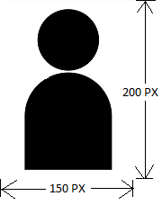

GUIDELINES FOR FILLING ONLINE APPLICATION FORM FOR ENROLMENT
Stage wise Online Enrolment Registration process
Attachments Guidelines
Photograph: The size should be 150W x 200H pixels, with a maximum size of 30 Kb in front facial pose. The back ground should be in light shade, with clearly visible face. The digital form of the photograph obtained from the Studio can be easily transformed into the required specification using any of the Image Processing Softwares like MS-Paint, Adobe Photoshop, GIMP etc.

Signature: The size should be 150W x 100H pixels, with a maximum size of 30 Kb.
Certificates: The size should be with a Maximum size of 100 Kb Minimum 60 Kb, with clearly readable Certificates.
1.Click on the “Online Enrolment Registration” link on the top of the Home page.
2. Then fill up the columns. You will receive a unique User ID and password through SMS in the mobile number entered, which should be remembered for future use. The User ID will be the mail ID. All the communications relating to the Enrolment will be sent through Mobile No. you have entered. . Please note that the applicant cannot change the details entered in the columns after saving the details.
1.(Name should be has in the SSLC/10th Std Certificates)
Login using the “User ID and Password”.
Candidates are advised to remit the fee as shown in the fee structure before entering the details.
2.Enter personal details
3.Enter Academic details and Certificates.
4.Attach Certificates and Payment details
5.Enter Declaration details.
6.Enter payment details.
7.Re check steps 1 to 5. Then Click “Apply Online”
8.Click submit button. After Select Form-5, Form-6,Form-7, Self Declaration
9.Download application.
The applicant shall upload clearly scanned copies of :-
1.Photograph
2.Signature
3.Certificates such as SSLC
4. +2/Pre degree (in the case of 5 year course only)
5. Degree (Graduation)
6. Law Degree.
7.Course and Conduct Certificate
8. Attendance Certificate {The applicants who have obtained Law Degree from
Universities outside Kerala},
9.Relieving Order (applicable to applicants who had been in employment prior to
filing of the application},
10. ID proof – Aadhar/Voters ID/Passport.
11. Community certificate in case of SC/ST candidates.
12. Pay-In-Slip( All pay-in-slips as one attachment)
Both sides of the Law Degree Certificate should be scanned and uploaded.
3. Payment Details
Select Fees Category then paid to the accounts of the Bar Council by Online payment. No cash remittance will be accepted in the Office. Payment gateway Terms & Conditions
4. Certificates & Documents to be produced at the time of personal verification
a)Print out of the registered Application Form.
b)Originals and two copies (not attested) of all the documents uploaded.
c)Copy of the LLB mark sheets or copy of the Consolidated mark list.
d)Copy of the mark list of basic Degree. (applicable to candidates studied 3 year LLB).
e)Two
recent Passport size color photograph of the applicant (not
attested) showing frontal view of full face against light
background.
Photographs
taken with colored glass or in uniform will not be accepted
.
f)Certificate of character in Form No.4 from two Advocates of more than 10 years standing in the Bar and who is not related to the applicant. The Form shall contain the Roll Number and office seal of the Advocates. (Form 4 can be downloaded from the website).
g)Original of the Pay-in-slip showing the remittance of fee.
h)Those applicants who had undertaken course of study in Law during employment shall produce Sanction Order for studying the Course from the Department/Organization where he was employed and shall also produce the particulars of the leave availed for study, issued by the authority of the concerned Department/Organization.
The date and time of Enrolment will be intimated to the candidate through SMS in the Mobile Number provided in the application.
a)Every applicant, if so required by the Council, has to appear in person for the purpose of giving further information, touching any matter mentioned in the answers, certificates or statements filed along with the application.
b)The applicants are warned that if the enrolment is obtained under misrepresentation of any essential fact in the enrolment application such enrolment shall liable to be cancelled.
c)The candidates will be duly informed of the date, place and time of Enrolment through SMS. The applicant shall be present as directed, in the advocates robes.
d)Every applicant shall be required to read out the declaration prescribed by the Council and shall sign the roll of Advocates maintained by the Council.
e)All candidates will be issued with Provisional Enrolment Certificates in person as far as practicable on the date of Enrolment.
f)The mail ID of Bar Council of Kerala is barcouncilofkerala@hotmail.com